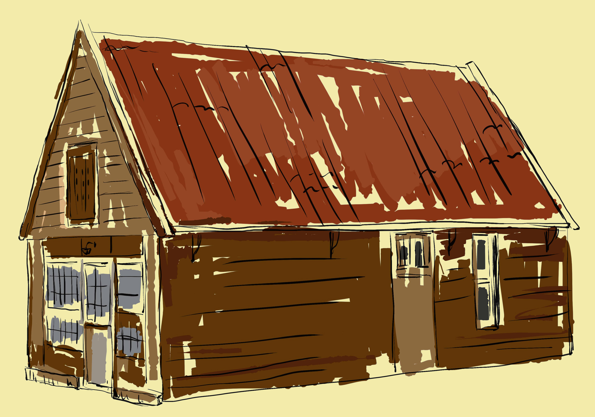
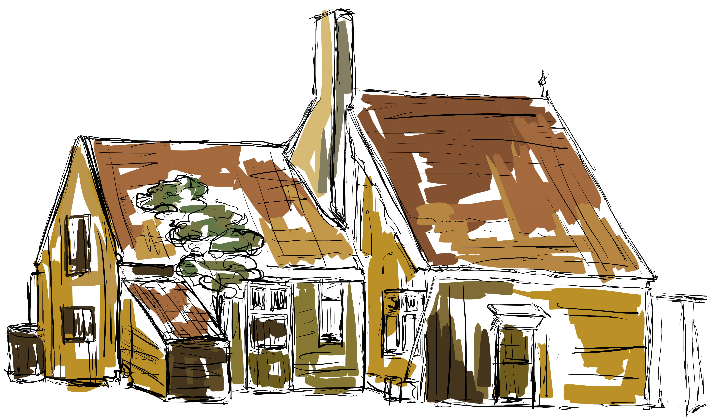
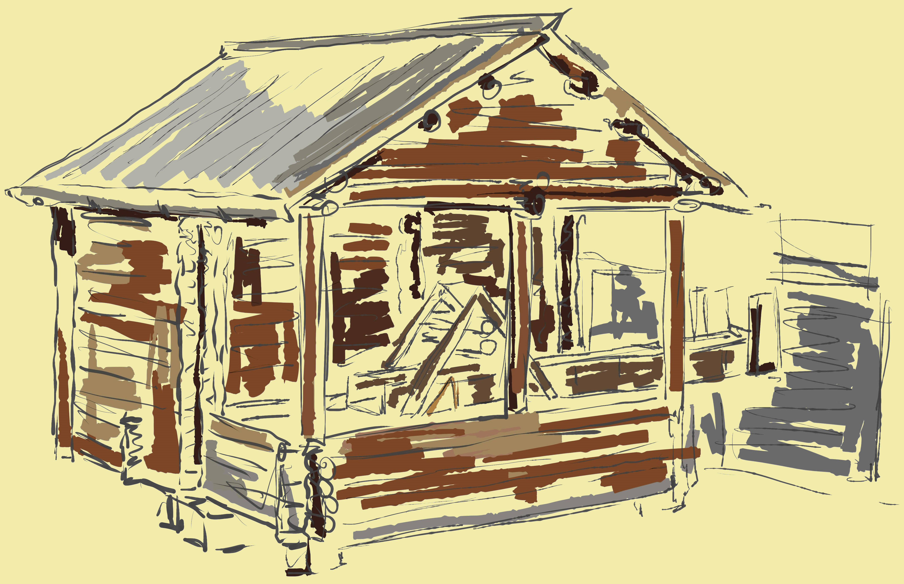
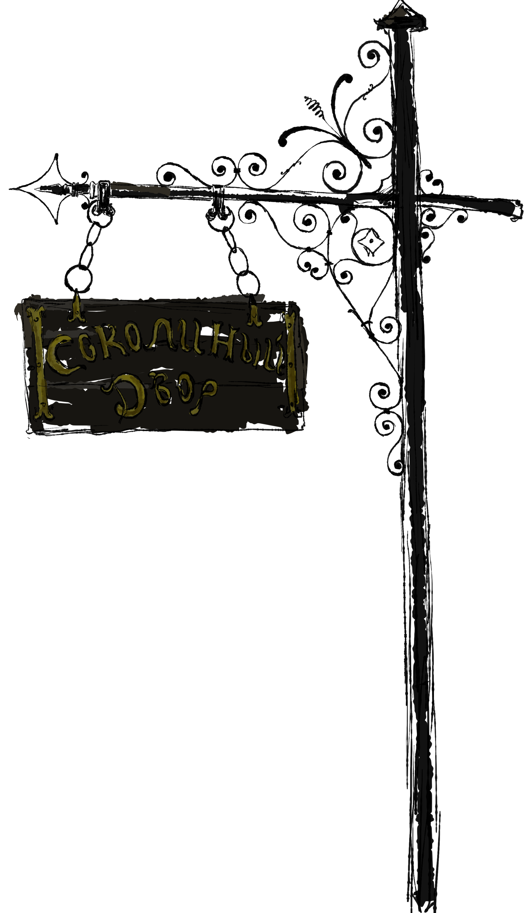
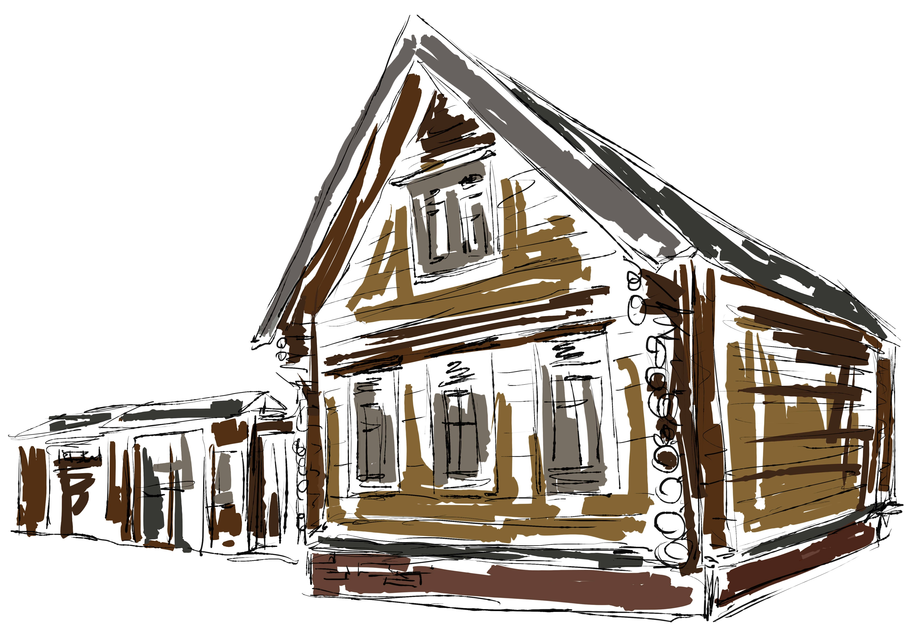

КОЛОМЕНСКАЯ КОПИЯ ГОЛЛАНДСКОГО ДОМИКА ПЕТРА 1 ВОСПРОИЗВОДИТ В
ПОДЛИННЫХ РАЗМЕРАХ
ДОМИК В ЗААНДАМЕ, КУДА ПЕТР I ПРИБЫЛ В 1697
И ГДЕ ПРОЖИЛ 8 ДНЕЙ, ОБУЧАЯСЬ
КОРАБЛЕСТРОЕНИЮ НА МЕСТНОЙ ВЕРФИ. ВОЗВОДИЛИ КОПИЮ ДОМИКА ГОЛЛАНДСКИЕ СТРОИТЕЛИ В 2013 Г.
В ДВУХ НЕБОЛЬШИХ КОМНАТАХ ПЛОЩАДЬЮ 42 КВ.М. КОПИИИ ДОМА В КОЛОМЕНСКОМ ПОСЕТИТЕЛИ УВИДЯТ ВОССТАНОВЛЕННЫЕ ФРАГМЕНТЫ ИНТЕРЬЕРА – КАМИН, ОБЛИЦОВАННЫЙ ДЕЛЬФТСКОЙ КЕРАМИЧЕСКОЙ ПЛИТКОЙ И СПАЛЬНОЕ МЕСТО ЦАРЯ ПЕТРА. УНИКАЛЬНЫМ ПРЕДМЕТОМ ЯВЛЯЕТСЯ КОВАННАЯ ОКОННАЯ ПЕТЛЯ XVII В. ОТ ПОДЛИННОГО ДОМИКА ЦАРЯ ПЕТРА В ГОРОДЕ ЗААНДАМЕ. ЭТА РЕЛИКВИЯ – ПОДАРОК ДИРЕКЦИИ ЗААНСКОГО МУЗЕЯ В СВЯЗИ С ОТКРЫТИЕМ КОПИИ ДОМИКА ЦАРЯ ПЕТРА В КОЛОМЕНСКОМ.
ДОМ ГЕРРИТА КИСТА В ЗААНДАМЕ БЫЛ ПОСТРОЕН В 1632 Г. В ОДНОМ ИЗ БЕДНЕЙШИХ РАЙОНОВ ГОРОДА И ЯВЛЯЛСЯ СТАРЕЙШИМ ДЕРЕВЯННЫМ ДОМОМ В НИДЕРЛАНДАХ. МАТЕРИАЛОМ ПОСЛУЖИЛИ ДУБОВЫЕ ДОСКИ ОТ СТАРЫХ МОРСКИХ СУДОВ. ТАКЖЕ ДАННЫЙ ДОМИК ПЕТРА I ПО ПРАВУ СЧИТАЕТСЯ ОДНИМ ИЗ ПЕРВЫХ МУЗЕЕВ В ГОЛЛАНДИИ. ЕГО ПОСЕЩАЛИ ИЗВЕСТНЫЕ ЛЮДИ И МОНАРШИЕ ОСОБЫ - ПАВЕЛ I (1781 Г.), НАПОЛЕОН БОНАПАРТ (1811 Г.), АЛЕКСАНДР I (1814 Г.) И Т.Д. С ДАВНИХ ВРЕМЕН ПОВЕЛАСЬ ТРАДИЦИЯ ОСТАВЛЯТЬ АВТОГРАФЫ НА СТЕНЕ ДОМИКА ВОЗЛЕ СПАЛЬНОГО МЕСТА ПЕТР I. В НАСТОЯЩЕЕ ВРЕМЯ ДОМ СОХРАНЕН И ЯВЛЯЕТСЯ ПОПУЛЯРНЫМ ТУРИСТИЧЕСКИХ ОБЪЕКТОМ.
В ЭКСПОЗИЦИИ – ПОРТРЕТЫ ПЕТРА I И ЕГО ЖЕНЫ ЕКАТЕРИНЫ I, ПРОИЗВЕДЕНИЯ ГРАФИКИ, ИКОНА СПАСА НЕРУКОТВОРНОГО – СВЯТЫНЯ СОПРОВОЖДАЛА ЦАРЯ В ВОЕННЫХ ПОХОДАХ. НА РАБОЧЕМ СТОЛЕ, ЗА КОТОРЫМ ТРУДИЛСЯ ПЕТР, ОСВАИВАЯ МОРСКИЕ НАУКИ, ПРЕДСТАВЛЕНЫ ЧЕРТЕЖИ И КНИГИ ПО КОРАБЛЕСТРОЕНИЮ, КАРТЫ, МАКЕТ ГОЛЛАНДСКОГО СУДНА. МУЛЬТИМЕДИЙНАЯ ЧАСТЬ ЭКСПОЗИЦИИ ЗНАКОМИТ С ИСТОРИЙ ВЕЛИКОГО ПОСОЛЬСТВА – ДИПЛОМАТИЧЕСКОЙ МИССИЕЙ РОССИИ В ЗАПАДНУЮ ЕВРОПУ, ПРЕДПРИНЯТОЙ ПЕТРОМ I В 1697-98 ГГ. НА ИНТЕРАКТИВНОЙ КАРТЕ МОЖНО НЕ ТОЛЬКО ПРОСЛЕДИТЬ МАРШРУТ ВЕЛИКОГО ПОСОЛЬСТВА, НО И УВИДЕТЬ СТРАНЫ И ГОРОДА, В КОТОРЫХ ПОБЫВАЛ ПЕТР, ПОНЯТЬ КАКИЕ ЗНАНИЯ ОН ПРИОБРЕЛ В ЕВРОПЕ И КАК ИСПОЛЬЗОВАЛ ИХ ДЛЯ БУДУЩЕГО ПРЕОБРАЗОВАНИЯ РОССИИ.
 ЭКСПОЗИЦИЯ «ВОДЯНАЯ МЕЛЬНИЦА» НАХОДИТСЯ НА БЕРЕГУ РЕКИ ЖУЖА, РЯДОМ С МУЗЕЕМ ДЕРЕВЯННОГО ЗОДЧЕСТВА. ЭКСПОЗИЦИЯ, ВОСПРОИЗВОДЯЩАЯ ОБУСТРОЙСТВО МЕЛЬНИЦЫ, ЗНАКОМИТ С ПРОЦЕССОМ ПОМОЛА ЗЕРНА, ДЕЙСТВИЕМ ВОДЯНОГО КОЛЕСА И ЖЕРНОВОВ. В МЕЛЬНИЦЕ МОЖНО УВИДЕТЬ КОМПЛЕКС ИСТОРИКО-БЫТОВЫХ ПРЕДМЕТОВ, СВЯЗАННЫХ С ПРОИЗВОДСТВОМ И ОБРАБОТКОЙ МУКИ.
МЕЛЬНИЦА, ВОССОЗДАННАЯ В КОЛОМЕНСКОМ, СРУБЛЕНА ИЗ ЛИСТВЕННИЦЫ. СРУБ РАЗДЕЛЕН НА ДВА ЯРУСА. В ПЕРВОМ ЯРУСЕ – ДВА СМЕЖНЫХ ПОМЕЩЕНИЯ: ОДНО ДЛЯ ПОМОЛА ЗЕРНА, ДРУГОЕ – ДЛЯ ПРЕБЫВАНИЯ КРЕСТЬЯН. В ПОМЕЩЕНИЕ ВТОРОГО ЯРУСА СО ДВОРА ПО ЛЕСТНИЦЕ ЗАНОСИЛИ МЕШКИ С ЗЕРНОМ И ОТТУДА ЗЕРНО ЗАСЫПАЛИ В КОВШ ДЛЯ ПОМОЛА. САМА ЖЕ МЕЛЬНИЦА ПОСТРОЕНА ПО СТАРИННОЙ ТЕХНОЛОГИИ — СРУБ БЕЗ ЕДИНОГО ГВОЗДЯ.
ОТСЮДА ЖЕ ПОШЛО ВЫРАЖЕНИЕ «СКРЕСТИ ПО СУСЕКАМ» -- «СОСКРЕБАТЬ ПОСЛЕДНЕЕ ОСТАВШЕЕСЯ», СУСЕК — ЭТО ЯЩИК ДЛЯ ХРАНЕНИЯ МУКИ, И КОГДА МУКИ БЫЛО МАЛО, ПРИХОДИЛОСЬ ПО СУСЕКУ «СКРЕСТИ», ЧТОБЫ СОБРАТЬ ХОТЬ ЧТО-ТО. СОВОК ДЛЯ ЭТОГО ЗАНЯТИЯ СДЕЛАН ИЗ ЦЕЛЬНОГО КУСКА ЛИПЫ И ОТЛИЧАЕТСЯ ЛЕГКОСТЬЮ, ЧТОБЫ ОБЛЕГЧИТЬ ТРУД МЕЛЬНИКА, КОТОРОМУ ПРИХОДИТСЯ ЦЕЛЫЙ ДЕНЬ ПЕРЕСЫПАТЬ МУКУ В МЕШКИ. МЕЛЬНИК НА РУСИ СЧИТАЛСЯ БОГАТЫМ ЧЕЛОВЕКОМ, ТАК КАК ДЕСЯТУЮ ЧАСТЬ ПОМОЛА ОСТАВЛЯЛ СЕБЕ.
 СОКОЛИНЫЙ ДВОР ПРЕДСТАВЛЯЕТ СОБОЙ ХОЗЯЙСТВЕННЫЙ КОМПЛЕКС, ПРЕДНАЗНАЧЕННЫЙ ДЛЯ СОДЕРЖАНИЯ ЛОВЧИХ ПТИЦ. ВО ВТОРОЙ ПОЛОВИНЕ XVII В. ПРИ ЦАРСКОМ ДВОРЦЕ В КОЛОМЕНСКОМ НАХОДИЛАСЬ КРЕЧАТНЯ, НА КОТОРОЙ СОДЕРЖАЛИСЬ ЛОВЧИЕ ПТИЦЫ: РАЗНЫЕ ВИДЫ СОКОЛОВ И ЯСТРЕБОВ, УЧАСТВОВАВШИХ В «ПТИЧЬЕЙ ПОТЕХЕ». ЯВЛЯЛСЯ ОДНИМ ИЗ НАИБОЛЕЕ ПОПУЛЯРНЫХ ДВОРОВ РОССИИ, А ТАКЖЕ НАИЛУЧШИМ И САМЫМ КРУПНЫМ СОКОЛИНЫМ ДВОРОМ В ЕВРОПЕ.
РЕКОНСТРУКЦИЯ СДЕЛАНА НА ОСНОВЕ АРХИВНЫХ МАТЕРИАЛОВ. КОМПЛЕКС РЕШЕН ПО ТИПУ КРЕСТЬЯНСКИХ УСАДЕБ ХАРАКТЕРНЫХ ДЛЯ СЕЛА КОЛОМЕНСКОГО. В КАЧЕСТВЕ АНАЛОГА ДЛЯ ОСНОВНОГО ЗДАНИЯ ВЗЯТ СЕЛЬСКИЙ ДОМ, КОТОРЫЙ ПО ВРЕМЕНИ ПОСТРОЙКИ ВОСХОДИТ К ПЕРВОЙ ПОЛОВИНЕ – СЕРЕДИНЕ XIX В. НЕОТЪЕМЛЕМОЙ ЧАСТЬЮ ЭКСПОЗИЦИИ ЯВЛЯЮТСЯ ЖИВЫЕ ЛОВЧИЕ ПТИЦЫ: СОКОЛЫ-БАЛOБАНЫ И ЯСТРЕБЫ-ТЕТЕРЕВЯТНИКИ – НАИБОЛЕЕ РАСПРОСТРАНЕННЫЕ ВИДЫ, УЧАСТВОВАВШИЕ В СОКОЛИНЫХ ОХОТНИЧЬИХ ПОТЕХАХ ЦАРЯ АЛЕКСЕЯ МИХАЙЛОВИЧА НА ТЕРРИТОРИИ ИЗЛЮБЛЕННОГО ИМ СЕЛА КОЛОМЕНСКОГО.